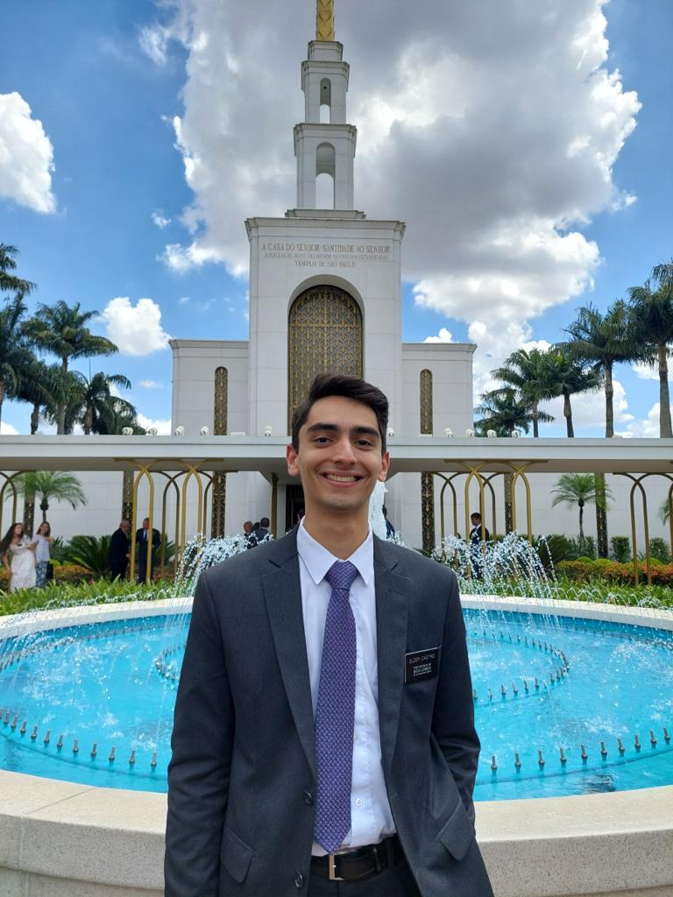

Vitor Martins Silva de Castro | WDD 130
Hey! I am Vitor and I'm from Brazil. I am pursuing a bachelors degree in software development. I am the middle child of 3 siblings and some things I like to do are play volleyball and videogames.
I've always been a member of the Church and it is one of the most important parts of my life! I love to live the gospel, because it is a gospel of change and growth! I know it will help me throughout this course.
One of my goals learning software development and programming languages is to get into game development. It is a more specific niche of development, but it is the one I take most interest in!
My favorite temples are: